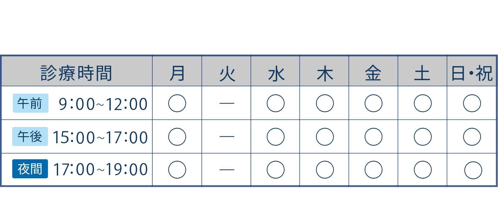

診療案内
- 診療時間

※夜間診療時間帯は、夜間診療費880円が別途かかります。
-
当院が休診日、または夜間救急時は下記のグループ病院で対応させていただきます。
(オンラインでカルテを共有しています)- 千葉どうぶつ総合病院(夜間救急対応病院)
- 千葉県流山市南流山1-21-8
TEL: 04-7157-8618
https://www.chiba-ah.com/
※夜間救急時は事前にお電話をお願いします。
- 診療対象動物
- 犬・猫
- 診療科目
- 動物に関わる全ての診療科目を幅広く診察する総合診療を行っています。
- セカンドオピニオン
- 飼い主様が十分に理解、納得した上で治療にあたれるよう、セカンドオピニオンに対応しております。 お気軽にご相談ください。
- その他のサービス
- ペットホテル・トリミングサロン併設
- お会計
- 詳細な明細書を発行しています。
事前に診療費に関して質問があればお問い合わせください。 お支払いは、各種クレジットカード・電子マネー・メディカルクレジットをご利用いただけます。 - 動物健康保険
- 当院は、アニコム・アイペットクラブ動物保険・ペット＆ファミリー動物健康保険、ドコモのペット保険対応病院となっております。